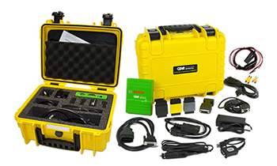

reconstruction & technical services
NAR-LLC OFFERS EXTENSIVE
SERVICES IN THE FIELD OF
CRASH INVESTIGATION
CRASH DATA RETRIEVAL
using BOSCH Technology
NAR partners have been certified in using the CDR system since its widespread use over 10 years ago. Now almost all new vehicle models on the road are supported by this system and many of older vehicle generations can be imaged as well. A complete list of supported models can be found on the official Crash Data Retrieval site.
The following information is listed on the Crash Data Group website found here.
Event Data Recorder (EDR) capabilites have become increasingly important in crash investigations because they store potentially important data that may be very useful in evaluating car crashes.
EDR is a function of the vehicle’s airbag control module and other sensors related to the safety and engine control systems of each vehicle.
For claims adjusters and insurance industry as a whole, the data that the CDR software can retrieve has become an additional tool to use along with the interpretation by a trained and experienced reconstructionist.
It is important to understand that these reports must be reviewed by an experienced reconstructionist and trained CDR analyst. The data contained in the reports, while valuable, must be verified by analyst using physical evidence and analysis from the original or followup investigations.
The insurance industry is using this technology more and more to analyze claims. Check out the video below for a description of the application of CDR data for these claims. Further information can be found on the CDR website here.
Note: Video below has loud audio beginning.
It is apparent that the CDR Tool is effectively being used and becoming a necessary part of evidence collection for fraudulent claims.
Drone (UAV) Flight Services
Crash Scene Mapping
- Fast, Safe and Superior documentation
- Our Pilots are fully licensed and our equipment is registered with the FAA for UAV missions
Our UAV provides NAR and their clients with a unique perspective of the crash scene. One that matches the scaled diagrams that are created for analysis and reports. This provides our clients with even more information and potential exhibit content for their case.
NAR-LLC is fully insured for drone missions and our scene work
For more information on FAA's drone program please follow this link to their external site.
Intersection Studies
- We are discovering new uses for the drone in each of our cases
We have found that we can use UAV footage for intersection studies and for courtroom exhibits in driver behavior.
In the examples below we show the power of drone footage in intersection cases where we can leverage the study of a particular intersection through statistical behavior for each travel lane. We can also use it for time/distance studies to show average acceleration times and even break the data down by vehicle type through video analysis.
As with any technology we know that this is a new tool that we will use when it is needed to best document your case but may not always be needed. Contact us with questions even if you have that potential case that you would like to discuss to see if our services could help improve the outcome of your case.
Reconstruction Services
ANALYSIS
- case merit analysis
- general reconstruction
- advanced reconstruction
INITIAL CASE RESEARCH TO EXAMINE WHAT TYPE OF INVESTIGATION IS NEEDED, IF ANY REVIEWING PRESENT CASE FACTS AND VALIDITY REVIEWING OPPOSITION'S CLAIMS OR ACCURACY OF THEIR REPORTS
OVERVIEW OF CASE, ANALYSIS, COMPLETE REPORT
SAME AS GENERAL INCLUDING ANIMATIONS, 3D DIAGRAMS AND OTHER SPECIALTY SERVICES
SCENE INVESTIGATION
- photography
- videography
- roadway friction testing
- 3d scale scene mapping with total station
- TIME/DISTANCE TESTING AND RESEARCH
- SIGHT DISTANCE TESTING AND ANALYSIS
FOR THE CREATION OF SCALE DRAWINGS FOR ANALYSIS AND VISUAL AID CREATION A CAD MAP IS REQUIRED
OUR 3D SCALE MAPS AND SCENE TESTING CAN DETERMINE SIGHT LINES AND RELATED TIME/DISTANCE ISSUES OR OTHER UNIQUE SCENE CHARACTERISTICS
OUR DRONE FLIGHTS CAN PRODUCE OUTPUT THAT CAN BE USED FOR BOTH ANALYSIS AND EXHIBITS OF SIGHT LINE ISSUES
A TOTAL STATION MAP OR DRONE FLIGHT TO CREATE ORTHOMOSAIC IMAGE OR POINT CLOUD IS REQUIRED FOR THE CREATION OF SCALED DIAGRAMS USED FOR ANALYSIS, ANIMATION AND VERIFICATION OF CDR DATA
VEHICLE INSPECTIONS
- FULL VEHICLE INSPECTION AND REPORT
- photography
- videography
- crush measurements
- TIRE EXAMINATION
- INTERIOR/TRACE EVIDENCE INSPECTION
- RESTRAINT INSPECTION/USE DETERMINATION
EXHIBITS
- FULL CASE PORTFOLIO
- COMPUTER GENERATED SCALE DIAGRAMS (2D AND 3D LARGE FORMAT)
- POWER POINT PRESENTATIONS
- VIDEO PRESENTATIONS
- ANIMATIONS (2D AND 3D)